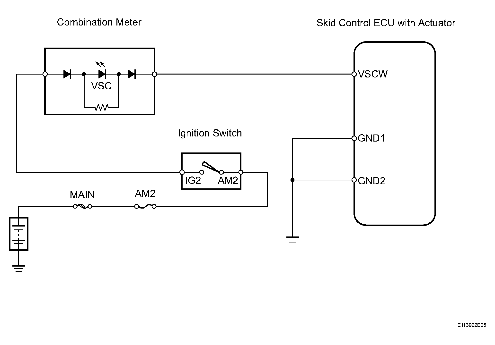

Home
>>
Scion
>>
2006
>>
xB Standard
>>
Repair and Diagnosis
>>
Brakes
>>
Anti-Lock Brakes
>>
Brakes - Abs
>>
Vehicle Stability Control System
>>
VSC Warning Light Remains ON
>>
Wiring Diagram
VSC Warning Light Remains ON: Wiring Diagram
Fig 1: VSC Warning Light Remains ON

Courtesy of © TOYOTA, LICENSE AGREEMENT TMS1002